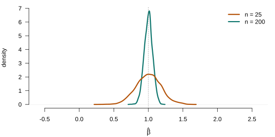
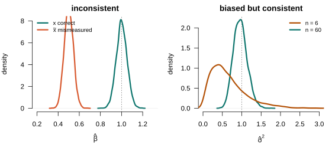

Resampling: The Bootstrap and Monte Carlo
Lecture 8
PIMES/UFPE
Where we are
Where this lecture sits
Asymptotic theory (Lecture 5) gave us one approximation to the sampling distribution of an estimator: \(\sqrt{n}\,(\hat{\theta}-\theta)\dto\Normal(0,V)\). It is an analytic approximation, exact only as \(n\to\infty\). This lecture builds a second approximation — a computational one, drawn straight from the data by resampling — and asks when each one helps.
The object we never observe
- An estimator \(\hat{\theta}\) is a random variable — a different sample would give a different number.
- Its sampling distribution is what every standard error and interval is really about — yet we see only one draw from it.
- Two ways to approximate it: asymptotic theory (a formula) and resampling (simulation).
Part I · Monte Carlo
The sampling distribution, made visible
Monte Carlo: design a DGP, repeat, measure
Definition 1 (Monte Carlo) Choose a data-generating process with known parameters, draw a sample from it, compute the estimator, and repeat \(R\) times. The histogram of the \(R\) estimates is the sampling distribution — exact up to simulation error, because you set the truth.
- (1) draw a sample from a DGP you specify; (2) compute \(\hat{\theta}\); (3) repeat \(R\) times.
- The centre of the \(R\) estimates reveals bias; the spread reveals variance; tail behaviour reveals coverage and size.
- Because the DGP is yours, the truth is known — Monte Carlo checks theory; it is not inference on real data.
Seeing the sampling distribution
Set the truth (\(\beta=1\)), draw many samples, and plot the slope estimates: the sampling distribution appears, centres on \(\beta\), and tightens as \(n\) grows — consistency, made visible.

Figure 1: Monte Carlo sampling distribution of the OLS slope (true \(\beta=1\)), for \(n=25\) and \(n=200\) over \(R=4000\) replications — centred on \(\beta\), concentrating as \(n\) grows.
Both tighten — only one on the truth
Both DGPs have true slope \(\beta=1\); concentrating as \(n\) grows is not the same as being right.

Figure 2: Why Monte Carlo matters. Left — an inconsistent estimator: OLS of \(y\) on a mismeasured regressor \(\tilde x=x+u\) concentrates on the attenuated plim \(0.5\), not \(\beta=1\). Right — a biased but consistent estimator: the ML variance \(\hat\sigma^2=\sum\hat e_i^2/n\) has its centre migrate to \(\sigma^2=1\) as \(n\) grows.
- Left · inconsistent (measurement error). DGP \(y=\beta x+\varepsilon\), but we observe \(\tilde x=x+u\). OLS of \(y\) on \(\tilde x\): \(\hat\beta_{\tilde x}\pto\beta\,\Var(x)/[\Var(x)+\Var(u)]=0.5\neq\beta\) — concentrates on the wrong value.
- Right · biased but consistent (ML variance). DGP \(y=\beta_0+\beta_1 x+\varepsilon\), \(\Var(\varepsilon)=\sigma^2\). Estimator \(\hat\sigma^2=\tfrac1n\sum_i\hat e_i^2\): \(\E[\hat\sigma^2]=\sigma^2(n-k)/n<\sigma^2\), yet \(\hat\sigma^2\pto\sigma^2\) (centre migrates).
- Taxonomy: unbiased = centred; consistent = tightens on the truth — data alone can’t tell, Monte Carlo (knowing the truth) can.
What Monte Carlo answers
- Bias and variance in finite samples — not only the limit.
- Coverage of a confidence interval and size/power of a test.
- Whether an asymptotic approximation is good enough at your \(n\).
Fix the RNG seed so results reproduce exactly. Simulation error in a mean shrinks like \(1/\sqrt{R}\): a few thousand replications pin down a bias, but tail quantities (coverage, critical values) need many more. Always report \(R\) and the seed.
Part II · The jackknife
Leave one out
The simplest resampling
Before random resamples, the oldest resampling idea: systematically leave out one observation at a time.
Definition 2 (The jackknife) For each \(i=1,\dots,n\), let \(\hat\theta_{(-i)}\) be the estimator recomputed on the sample with observation \(i\) deleted. The \(n\) leave-one-out estimates \(\{\hat\theta_{(-i)}\}\) measure how much each observation moves \(\hat\theta\) — a deterministic, \(n\)-fold resampling (no randomness, no seed).
- \(n\) refits, each dropping one point — the jackknife perturbs the sample deterministically.
- Use — influence diagnostics: the leave-one-out estimates reveal which observations drive \(\hat\theta\) (a high-leverage point swings it; the basis of DFBETA / Cook’s distance).
- It predates the bootstrap (Quenouille, Tukey) — the natural first step into resampling.
The jackknife variance
Measuring spread by leaving out
Theorem 1 (Jackknife variance) The jackknife estimate of the variance of \(\hat\theta\) is the (scaled) spread of the leave-one-out estimates, \[\widehat{\Var}_{\text{jack}}=\frac{n-1}{n}\sum_{i=1}^{n}\big(\hat\theta_{(-i)}-\bar\theta\big)^2, \qquad \bar\theta=\frac1n\sum_{i}\hat\theta_{(-i)}.\] No analytic variance formula is needed — like the bootstrap SE, but deterministic.
- Drop any single point and \(\hat\theta\) barely moves ⇒ precise; a few points swing it ⇒ large variance.
- The \((n-1)/n\) factor rescales the tiny leave-one-out spread up to the sampling scale.
- Use — a standard error with no formula: for estimators whose variance is hard to derive (nonlinear functions of \(\hat\theta\), two-step), just refit and take the spread — the delta-method alternative.
The jackknife is robust
It reproduces HC3
For OLS there is no need to refit \(n\) times — the leave-one-out coefficient has a closed form through the leverage \(h_{ii}=\mathbf{x}_i'(\bX'\bX)^{-1}\mathbf{x}_i\): \[\hat{\bbeta}_{(-i)}=\hat{\bbeta}-\frac{(\bX'\bX)^{-1}\mathbf{x}_i\,\hat e_i}{1-h_{ii}}.\]
Substituting into \(\widehat{\Var}_{\text{jack}}\) gives — up to the \((n-1)/n\) factor — the HC3 robust variance, \[\widehat{\Var}_{\text{HC3}}[\hat{\bbeta}]=(\bX'\bX)^{-1}\Big[\textstyle\sum_i \dfrac{\hat e_i^2}{(1-h_{ii})^2}\,\mathbf{x}_i\mathbf{x}_i'\Big](\bX'\bX)^{-1}.\] The jackknife of OLS is the heteroskedasticity-robust sandwich — derived by resampling, not assumed.
- The robust s.e. of Lectures 5/7 and the jackknife are two routes to the same quantity.
- \(1/(1-h_{ii})^2\) upweights high-leverage points — HC3 is the small-sample-best HC variant.
Delete one whole cluster at a time: the delete-cluster jackknife is a formula-free, few-clusters-safe alternative to the CRVE. Delete-one-obs \(\approx\) HC3; delete-one-cluster \(\approx\) cluster-robust.
Part III · The bootstrap
Resampling the data itself
The plug-in principle
Monte Carlo needs the true distribution \(F\). On real data we do not know it — so we replace it by the one distribution we can see.
Definition 3 (The plug-in principle) The sampling distribution depends on the unknown population \(F\). Replace \(F\) by the empirical distribution \(\hat{F}\) (mass \(1/n\) on each observed point) and compute everything in the bootstrap world. Sampling from \(\hat{F}\) is exactly sampling with replacement from the data.
Treat the sample as the population; draw new samples from it; the variation of \(\hat{\theta}\) across those draws estimates its true sampling variation.
Three flavours, one idea
The jackknife (Part II) resampled deterministically; the bootstrap resamples at random from \(\hat{F}\). Three versions — the same plug-in, differing only in what they resample:
- Pairs (nonparametric): resample whole observations \((y_i,\mathbf{x}_i)\) with replacement.
- Residual: keep \(\mathbf{X}\) fixed; resample the residuals \(\hat e_i\) and rebuild \(y_i^{*}\).
- Wild: keep \(\mathbf{X}\) and each residual in place; flip each residual’s sign at random.
The nonparametric (pairs) bootstrap
Resample whole observations \((y_i,\mathbf{x}_i)\) — the data straight from \(\hat F\), no model imposed.
- 1. Draw indices \(i_1,\dots,i_n\) with replacement from \(\{1,\dots,n\}\) — a resample of size \(n\) (some rows repeat, some drop out).
- 2. Form the resampled dataset \(\{(y_{i_1},\mathbf{x}_{i_1}),\dots,(y_{i_n},\mathbf{x}_{i_n})\}\) and recompute \(\hat{\theta}^{*}\).
- 3. Repeat \(B\) times; the spread of \(\{\hat{\theta}^{*}_b\}\) is the standard error, its quantiles the interval.
- Each draw keeps the pair \((y_i,\mathbf{x}_i)\) together, so no homoskedasticity or functional-form assumption — whatever heteroskedasticity the data carry rides into the resamples. The default when in doubt.
The residual bootstrap
Resample the residuals, keeping the regressors \(\mathbf{X}\) fixed.
- 1. Fit OLS once: \(\hat{\bbeta}\) and residuals \(\hat e_i=y_i-\mathbf{x}_i'\hat{\bbeta}\).
- 2. Draw \(\hat e_i^{*}\) with replacement from \(\{\hat e_1,\dots,\hat e_n\}\) — the residuals get shuffled across observations.
- 3. Rebuild \(y_i^{*}=\mathbf{x}_i'\hat{\bbeta}+\hat e_i^{*}\) and refit to get \(\hat{\bbeta}^{*}\); repeat \(B\) times.
- Shuffling residuals assumes they are i.i.d. (homoskedastic) ⇒ invalid under heteroskedasticity.
The wild bootstrap
Keep each residual with its own observation — only flip its sign at random.
- 1. Fit OLS once: \(\hat{\bbeta}\) and residuals \(\hat e_i\) (same as before).
- 2. For each \(i\), draw a sign \(v_i=\pm1\) (each with prob \(\tfrac12\) — Rademacher: \(\E[v_i]=0\), \(\Var(v_i)=1\)) and set \(\hat e_i^{*}=\hat e_i\,v_i\).
- 3. Rebuild \(y_i^{*}=\mathbf{x}_i'\hat{\bbeta}+\hat e_i^{*}\) and refit; repeat \(B\) times.
- The residual is not shuffled — it stays at its own \(i\), so a large residual stays a large perturbation there: this preserves heteroskedasticity, so the wild bootstrap is valid under heteroskedasticity.
For clustered data, draw one weight \(v_c=\pm1\) per cluster and apply it to the whole residual vector \(\hat{\beps}_c\). This preserves within-cluster dependence and is the reliable fix for the few-clusters problem we left open in Lecture 7 — resampling clusters, not observations.
Part IV · Bootstrap inference
From resamples to standard errors and intervals
Bootstrap standard errors
Theorem 2 (Bootstrap standard error) The bootstrap standard error of \(\hat{\theta}\) is the standard deviation of \(\hat{\theta}^{*}\) across the \(B\) resamples, \[\widehat{\mathrm{se}}_{\text{boot}}=\sqrt{\frac{1}{B-1}\sum_{b=1}^{B}\big(\hat{\theta}^{*}_b-\bar{\theta}^{*}\big)^2}, \qquad \bar{\theta}^{*}=\frac1B\sum_b \hat{\theta}^{*}_b.\] No analytic formula for \(\Var(\hat{\theta})\) is needed — the resamples supply it. This is what makes the bootstrap valuable for estimators whose variance is hard to derive (e.g. functions of \(\hat{\bbeta}\)).
Confidence intervals, briefly
Beyond a standard error, the bootstrap also gives a whole interval, straight from the resamples.
- Percentile interval: take the \(2.5\%\) and \(97.5\%\) quantiles of the \(B\) bootstrap estimates \(\{\hat\theta^{*}_b\}\) — that is the 95% interval. Simple and assumption-light.
- A studentized refinement (the percentile-\(t\)) improves coverage accuracy; we note it exists and stop there.
How many replications?
A standard error is a central quantity and settles early; a quantile lives in the tail and needs more resamples to pin down.
- Standard errors: a few hundred resamples suffice — the bootstrap se is a standard deviation over \(B\), and its simulation error shrinks like \(1/\sqrt{B}\).
- Intervals and tests: quantiles are tail quantities, so take \(B\ge 999\) — far fewer resamples land in the tail that fixes the \(2.5\%/97.5\%\) cut-offs.
- Why \(999\): picking \(B\) so \(\alpha(B+1)\) is an integer puts the interval ends on exact order statistics (the \(25\)th and \(975\)th of \(1000\)) — no quantile interpolation.
- Reproducibility: the bootstrap is random, so fix the seed and report \(B\).
Seeing it · the resampling laboratory
The bootstrap finds the sampling distribution
One sample, resampled \(B\) times, reproduces the sampling distribution we could otherwise know only by drawing many fresh samples. Because we set the DGP, we can draw both and compare:

Figure 3: The resampling laboratory. Grey: the true sampling distribution of the slope, from \(R\) Monte Carlo draws of fresh samples (known, because we set the DGP). Teal: the bootstrap distribution, from \(B\) resamples of a single sample. Both centred — true at \(\beta\), bootstrap at \(\hat\beta\) — to compare shape and spread.
- The bootstrap, built from one dataset, reproduces the variability it never directly saw.
- Centres differ (\(\hat\beta\) vs \(\beta\)) — the bootstrap approximates the distribution of \((\hat\theta^{*}-\hat\theta)\), which tracks that of \((\hat\theta-\theta)\).
- Where they would disagree — small \(n\), heavy tails, non-regular functionals — is the instructive case.
Part V · What the bootstrap does and does not do
The limits of resampling
It complements — it does not replace — asymptotics
- It does approximate the sampling distribution in finite samples, handle heteroskedasticity (wild) and clustering (wild cluster), and can refine the asymptotic approximation.
- It does not fix inconsistency — resampling a biased or inconsistent estimator faithfully reproduces its bias. Garbage in, garbage out.
- It does not rescue weak instruments or other non-regular problems (a parameter on a boundary, a non-smooth functional), where the standard bootstrap can fail.
- It is only as good as the dependence it reproduces: resample independent draws from dependent data and you understate the uncertainty.
Bootstrap and Monte Carlo come back for weak instruments (Lecture 11), GMM (Lecture 12), and finite-sample MLE inference (Lectures 13–14). The honest limits stated here are what make those later uses defensible.
Summary
What to take away
- The sampling distribution is the target; asymptotics approximates it with a formula, resampling with simulation.
- Monte Carlo studies estimators when you know the truth; the bootstrap replaces the unknown \(F\) by the data, \(F\to\hat{F}\).
- Match the scheme: pairs/wild for heteroskedasticity, wild cluster for clustering, residual only if i.i.d.
- Report a bootstrap standard error or a percentile interval; fix the seed and \(B\).
- It complements asymptotics — it does not fix inconsistency, weak instruments, or non-regular cases.
Hansen, Econometrics, ch. 10; Greene, ch. 15.